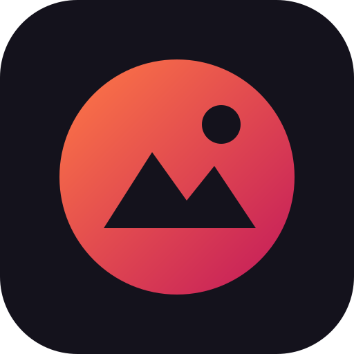

مَشهد
9:16
16:9
1:1
↶
↷
تصدير
ابدأ بإضافة فيديو أو صورة
＋ استيراد
00:00.0
▶
00:00.0
✂ تقسيم
⧉ نسخ
⇠ للأمام
للخلف ⇢
🗑 حذف
🔍
فيديو
نص/ملصق
صوت
🎞️
وسائط
🅣
نص
😀
ملصقات
🎨
فلاتر
⏩
سرعة
◐
انتقال
🎵
صوت
📁
المشروع
تصدير الفيديو
الجودة
720p
1080p
480p
ابدأ التصدير
إغلاق
⬇ تنزيل الفيديو